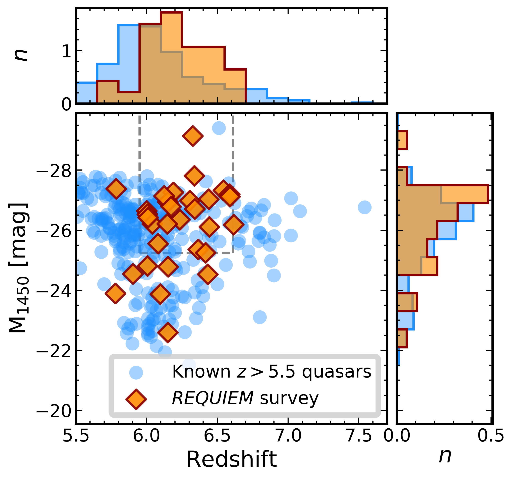

The Sample
Currently, our sample consists of 31 quasars in the redshift range 5.77<z<6.62 located in the southern sky. Observations have been collected with the MUSE instrument on the VLT telescope YEPUN as a part of the ESO programs: 60.A-9321(A, Science Verification), 094.B-0893(A, PI: Venemans), 095.B-0419(A, PI: Roche), 095.A-0714(A, PI: Karman), 099.A-0682(A, PI: Farina), 0101.A-0656(A, PI: Farina), 0103.A-0562(A, PI: Farina), and 297.A-5054(A, PI: Decarli).

These quasars have an average redshift of z=6.22 and an average absolute magnitude of M1450=-26.9mag. Among these, only J2228+0110 is a confirmed radio-loud quasar. For most of our targets, sensitive ALMA observations of the [CII] fine-structure line and of the underlying dust continuum have been collected (Decarli et al. 2017, 2018, Venemans et al. 2018).
| Name | z | M1450 | Exp. Time | Prog. ID | Ref. |
|---|---|---|---|---|---|
| J0305-3150 | 6.6145 | -26.12 | 8640 | 094.B-0893 | F17; F19 |
| P323+12 | 6.5881 | -27.06 | 2964 | 0101.A-0656 | F19 |
| P231-20 | 6.5864 | -27.14 | 11856 | 099.A-0682 | M19; D19; F19 |
| P036+03 | 6.5412 | -27.28 | 2964 | 0101.A-0656 | F19 |
| J2318-3113 | 6.4435 | -26.06 | 2964 | 0101.A-0656 | F19 |
| P183+05 | 6.4386 | -26.98 | 2964 | 099.A-0682 | F19 |
| J0210-0456 | 6.4323 | -24.47 | 2964 | 0103.A-0562 | F19 |
| J2329-0301 | 6.4164 | -25.19 | 7170 | 60.A-9321 | D19; F19 |
| J1152+0055 | 6.3643 | -25.30 | 2964 | 0103.A-0562 | F19 |
| J2211-3206 | 6.3394 | -26.66 | 2964 | 0101.A-0656 | F19 |
| J0142-3327 | 6.3379 | -27.76 | 2964 | 0101.A-0656 | F19 |
| J0100+2802 | 6.3258 | -29.09 | 2964 | 0101.A-0656 | F19 |
| J1030+0524 | 6.3000 | -26.93 | 23152 | 095.A-0714 | D19; F19 |
| P308-21 | 6.2341 | -26.29 | 17784 | 099.A-0682 | F19 |
| P065-26 | 6.1877 | -27.21 | 2964 | 0101.A-0656 | F19 |
| P359-06 | 6.1722 | -26.74 | 2964 | 0101.A-0656 | F19 |
| J2229+1457 | 6.1517 | -24.72 | 2964 | 0103.A-0562 | F19 |
| P217-16 | 6.1498 | -26.89 | 2964 | 0101.A-0656 | F19 |
| J2219+0102 | 6.1492 | -22.54 | 2964 | 0103.A-0562 | F19 |
| J2318-3029 | 6.1458 | -26.16 | 2964 | 0101.A-0656 | F19 |
| J1509-1749 | 6.1225 | -27.09 | 2964 | 0101.A-0656 | F19 |
| J2216-0016 | 6.0962 | -23.82 | 2964 | 0103.A-0562 | F19 |
| J2100-1715 | 6.0812 | -25.50 | 13338 | 297.A-5054 | M19; D19; F19 |
| J2054-0005 | 6.0391 | -26.15 | 3869 | 0101.A-0656 | F19 |
| P340-18 | 6.01 | -26.36 | 2964 | 0101.A-0656 | F19 |
| J0055+0146 | 6.0060 | -24.76 | 2964 | 0103.A-0562 | F19 |
| P009-10 | 6.0039 | -26.50 | 2964 | 0101.A-0656 | F19 |
| P007+04 | 6.0008 | -26.59 | 2964 | 0101.A-0656 | F19 |
| J2228+0110 | 5.9030 | -24.47 | 40950 | 095.B-0419 | D19; F19 |
| J1044-0125 | 5.7847 | -27.32 | 2964 | 0103.A-0562 | F19 |
| J0129-0035 | 5.7787 | -23.83 | 2964 | 0103.A-0562 | F19 |